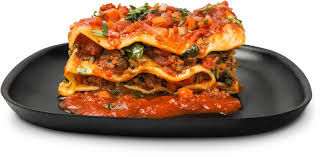

Lasagna

Description
This recipe is about a lasgna from italia
- meat
- noodle
- cheese
- tomato sauce
Steps
- Bring a large pot of water to a boil.
- Meanwhile, in a large skillet or saucepan, combine ground beef, sausage, and garlic. Cook over medium-high heat until browned. Drain half the fat; less if you’re feeling naughty. Add tomatoes, tomato paste, 2 tablespoons parsley, basil and 1 teaspoon salt. After adding the tomatoes, the sauce mixture should simmer for 45 minutes while you are working on the other steps.
- In a medium bowl, mix cottage cheese, beaten eggs, grated Parmesan, 2 more tablespoons parsley, and 1 more teaspoon salt. Stir together well. Set aside. Add 1/2 teaspoon salt and the olive oil to the boiling water, then cook the lasagna noodles until al dente (not overly cooked). Drain.
- To assemble: Arrange 4 cooked lasagna noodles in the bottom of a baking pan, overlapping if necessary. Spoon half the cottage cheese mixture over the noodles. Spread evenly. Cover cottage cheese with a layer of mozzarella cheese. Spoon a little less than half the meat/sauce mixture over the top. Repeat, ending with meat/sauce mixture. Sprinkle top generously with extra Parmesan.
- Either freeze, refrigerate for up to 2 days, or bake immediately: 350°F oven until the top is hot and bubbly, 20 to 30 minutes.